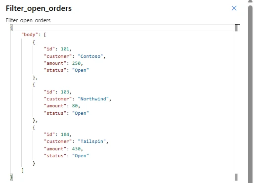

- Power Automate
- Level 2 · Working with data · 1 of 7
Select, Filter array and Join
Beginners loop over a list with Apply to each to do almost anything. Three data operations do most of that work in one step each, and much faster: Filter array keeps the rows you want, Select keeps or renames the columns you want, and Join turns a list into one line of text.
The demo flow

The starting list has five orders. Each has an id, customer, amount and status (Open or Closed).
Filter array: keep the rows you want

@equals(item()?['status'], 'Open')| Piece | What it does |
|---|---|
item() | The row being checked. Filter array tests every row, one at a time. |
?['status'] | Reads the status field of that row. |
equals(..., 'Open') | True keeps the row; false drops it. Text comparison is case-sensitive. |
In the designer you can build the same rule with the three boxes (value, operator, value). Switch to Edit in advanced mode when you need and / or.
Select: keep or rename the columns

Select has two modes. In key/value mode each row becomes an object with the keys you type. Switch to text mode (the small toggle on the Map box) and each row becomes one value instead, which is what Join needs:
@concat(item()?['customer'], ' (', string(item()?['amount']), ')')| Piece | What it does |
|---|---|
item()?['customer'] | The customer name of the current row. |
string(item()?['amount']) | The amount as text, so it can be joined. |
concat(...) | Builds one line per row, for example Contoso (250). |
Join: a list into one line of text

The last step, Create HTML table, takes the Select output and makes an HTML table you can drop into an email body. It uses the keys (Order, Customer, Amount) as column headers.
New to this? Start from the basics optional
Array: a list. In JSON it is wrapped in square brackets [ ].
Row and column: when a list holds objects, each object is a row and each field (id, customer) is a column.
item(): inside Filter array and Select, the row currently being processed. Outside them it has no meaning.
Build it step by step optional
- Create an instant flow and add a Compose named Orders. Paste a JSON array of five orders with id, customer, amount and status.
- Add Filter array (Data Operation). From: Outputs of Orders. Condition:
item()?['status']is equal to Open. - Add Select. From: Body of Filter array. Map three keys: Order =
item()?['id'], Customer =item()?['customer'], Amount =item()?['amount']. - Add a second Select, switch the Map to text mode and enter the concat expression above.
- Add Join. From: the second Select's Body. Join with: a comma and a space.
- Add Create HTML table. From: the first Select's Body. Columns: Automatic.
- Test, then open each step and use Show raw outputs to see the list change shape.
Common mistakes
- Using
items('Apply_to_each')inside Filter array or Select. These actions useitem(), without the s and without a name. - Filtering a list that came from a connector with Filter array when the connector itself can filter. Filtering at the source (see the OData article) moves less data.
- Expecting Join to accept a list of objects. It needs a list of simple values, so Select in text mode first.